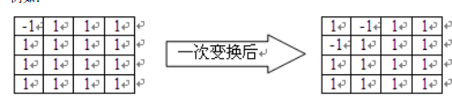
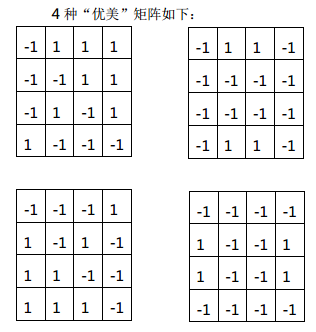

BZPRO
#5176. [Jsoi2013]优美矩阵
内存限制：512 MiB
时间限制：10 Sec
提交
提交记录
讨论
题目描述
给定一个n*n的矩阵，矩阵中的每个数可能为1或-1。定义一种变换操作：矩阵中的每个数都变成变换前它上下左右
四个数字的乘积（如果某个数上下左右某个位置没有数字，那就取其他数字的乘积）。
例如：

如果一个矩阵经过这样的变换操作后，得到的矩阵和原来的矩阵完全相同，那么我们称这样的矩阵是“优美”的。
（相同指对应位置的数字都相等，不考虑旋转或翻转后的相同。）现在，毛明明在一个空的矩阵中先选了若干个位
置填上了数字，现在他想知道，如果把其他的位置都继续填满，最后得到的矩阵有多少种是“优美”的。
输入格式
第一行，包含2个整数n、m，分别为矩阵的大小、已填的位置个数。
接下来m行，每行三个整数x、y、z，表示已在矩阵第x行、第y列填上了数字z。
（1<=x,y<=n,z为1或-1，且所有的x互不相同，所有的y互不相同。）
N<=1000
输出格式
输出一行一个整数，表示“优美”矩阵的个数。
若不论怎么填都不能得到“优美”矩阵，则输出“0”。
样例
样例输入
4 2
1 1 -1
4 4 -1
样例输出
4
数据范围与提示
